线上成果整合六个根系动作、五幕动线、场地航拍地图与在地展品位置，可直接浏览完整策展结构。
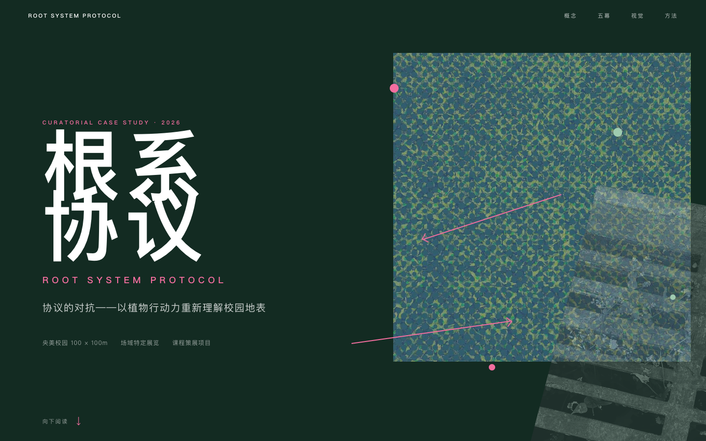
点击查看网页 ↗项目以中央美术学院校园内 100×100 米区域为场地，关注植物生长、园林维护与校园管理之间形成的长期关系。
策展方案保留原有校园功能，通过地图、导视、作品配置和参与机制呈现裂缝、自生植物、苔藓、腐殖层及根系对铺装的影响。
项目类型：场域特定展览设计提案。
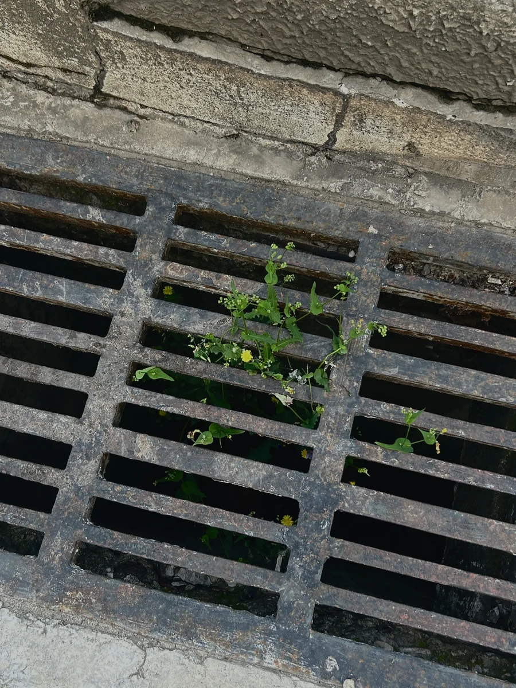
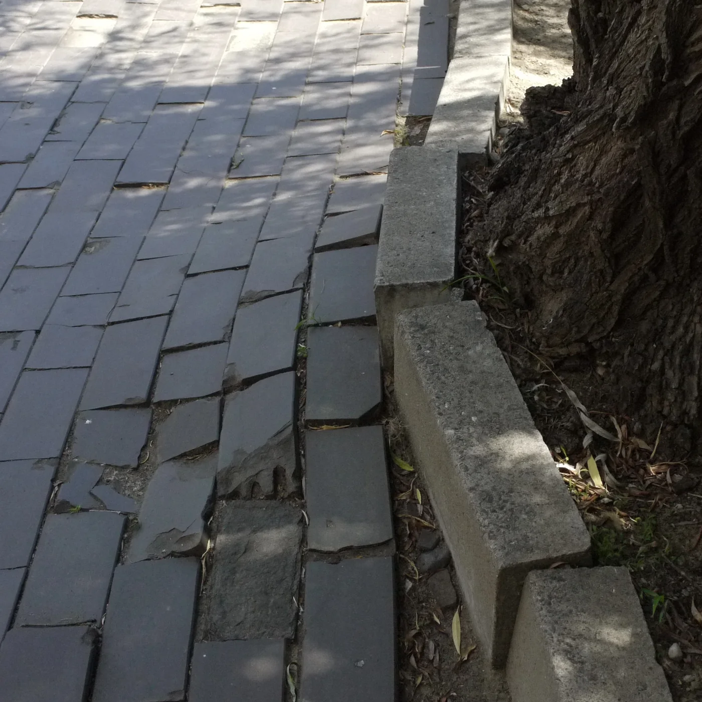
对 100×100m 范围做了完整的实地记录：23 种植物、5 种动物、3 类微生物、约 24 处装置，以及日常穿行路线与低可见的生态层。
调研形成三项设计依据：
既有展示系统：制度标识、校园景观与日常路线已经构成信息环境，方案沿用现有场地组织内容。
可见性分层：游客关注校园形象，学生关注通行效率，维护人员关注清扫与修剪；三类视角对应不同信息入口。
自发生长样本：排水沟铁篦子中的野草被设为动线起点，用于引出植物与管理制度之间的关系。
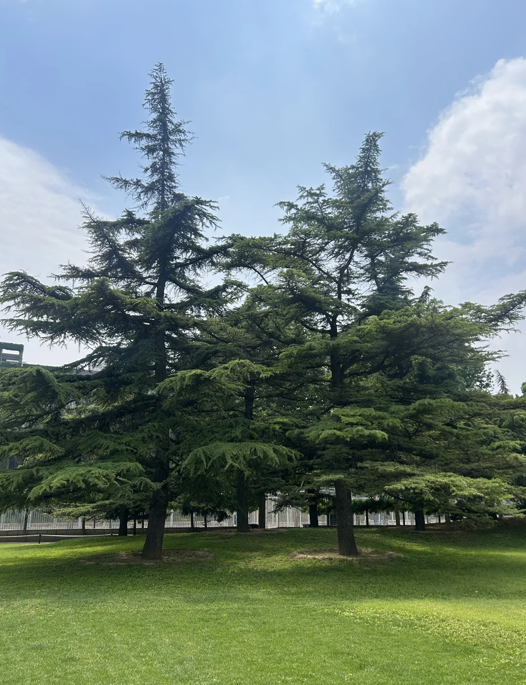
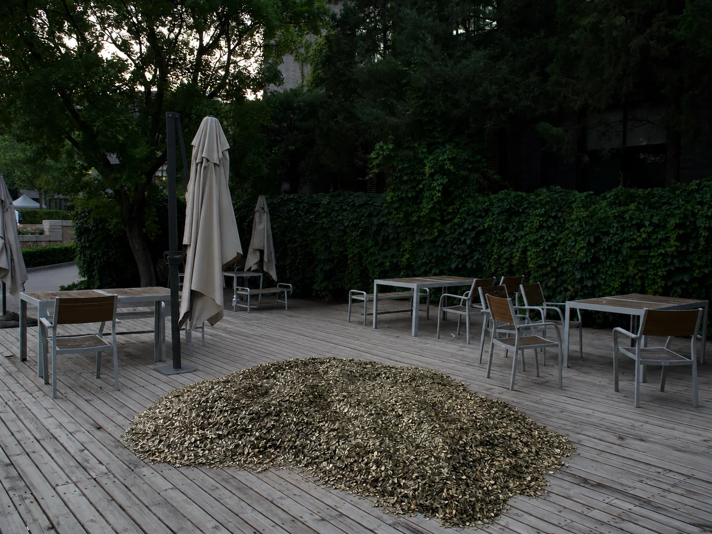
根据校园使用方式划分三类观众，并将现有行为转化为参与机制：
| 谁 | 现在的关系 | 展览让他成为 |
|---|---|---|
| 穿行者<br>学生 / 教职工 | 日常通行 | 行走路径形成参与记录 |
| 观看者<br>游客 | 拍照与参观 | 拍摄并记录场地生态证据 |
| 维护者<br>物业 / 园林 | 清扫与修剪 | 维护痕迹进入项目档案 |
参与设计不增加额外操作要求，并保持校园通行与维护秩序。
将“根系”拆分为六个可用于动线、展签与作品分类的动作：
向下扎根 DESCEND · 向外延伸 SPREAD · 向上生长 ASCEND · 供养再生 NOURISH · 抓取导通 CONDUCT · 破坏改写 REWRITE
每个动作对应具体场地节点与作品，作为导览和展签的信息分类。
动线从西侧入口进入，经南端核心区域后回程闭环。
| 幕 | 内容 | |
|---|---|---|
| 00 | 序章 · 入地 | 叶脉与地裂连成一条观看路径，三处入场锚点 |
| 01 | 第一幕 · 被框住的根 | 被装盒展示的树，与排水沟里未经许可生长的野草并置 |
| 02 | 第二幕 · 幽暗地表 | 落叶收集器从布展首日持续积累，让缓慢供养变得可计量 |
| 03 | 第三幕 · 裂缝中的协议 | 场地内真实雪松；麻线与石灰粉显影不可见的根幅 |
| 04 | 终章 · 回到地表 | 观众在落叶堆中坐下，身体留下短暂凹痕 |
材料包括麻线、石灰粉、木炭、再生纸与木桩。展期两周，每日巡检；材料可回收，撤展后不留永久结构。
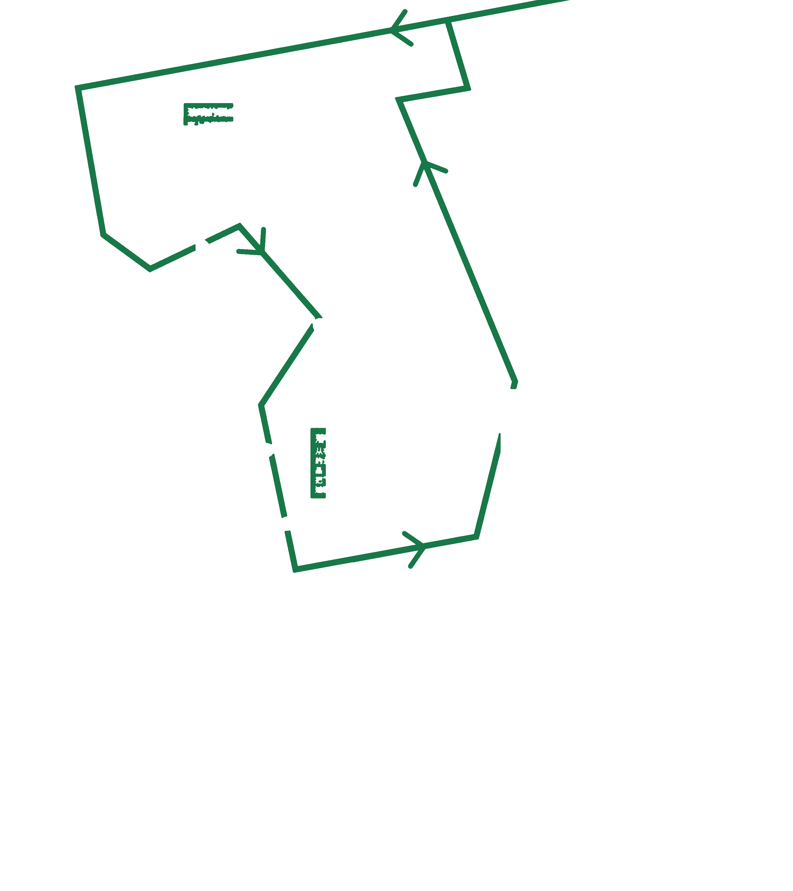
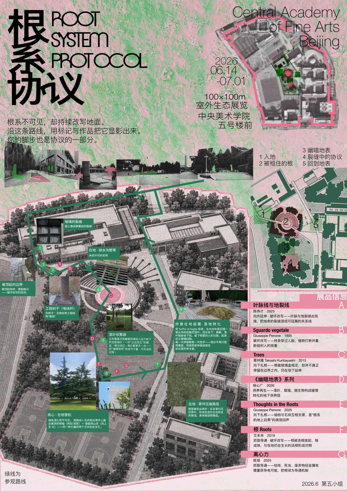
视觉系统采用深绿、荧光粉与亮绿，分别对应校园表面、人工标记和植物生长。
地图、海报与导视共用方向标记、节点编号和场地坐标，统一线上页面与现场物料的信息结构。
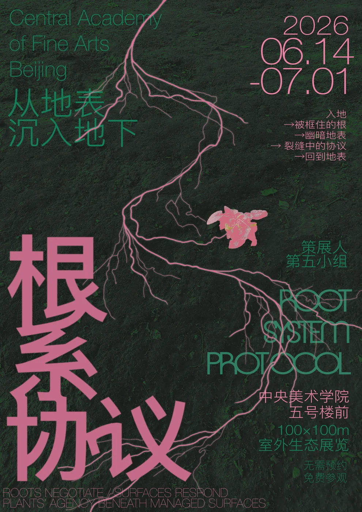
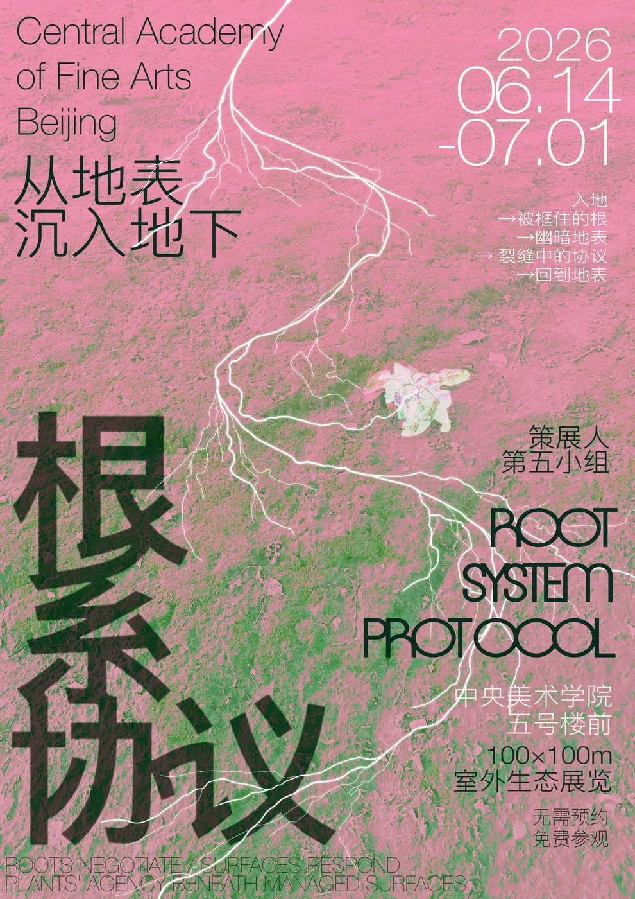
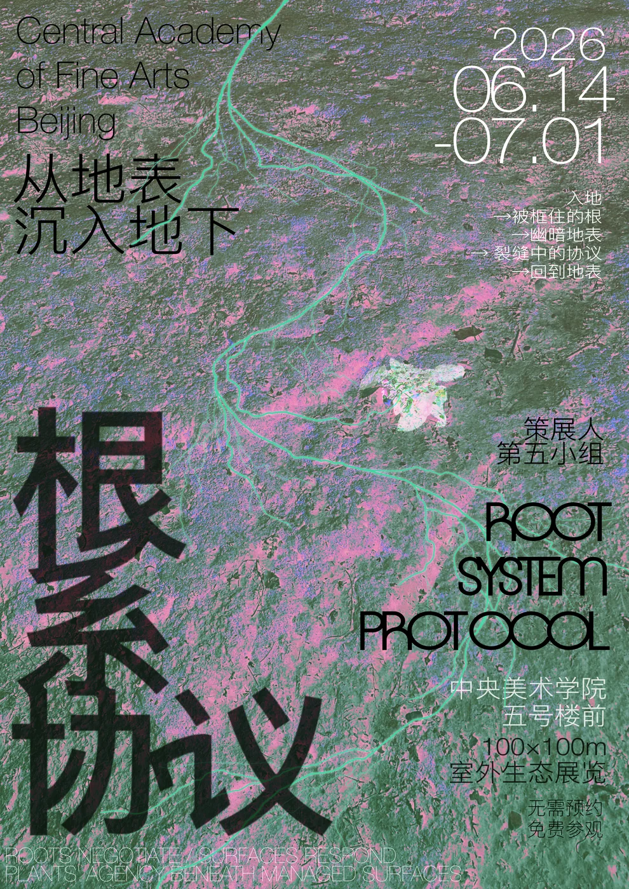
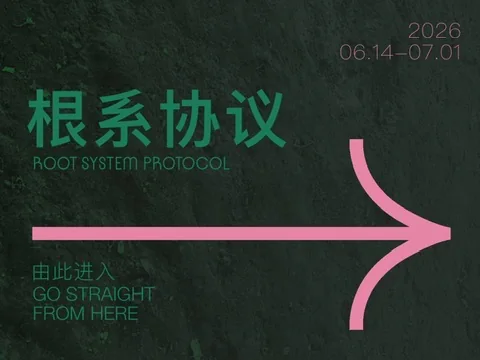
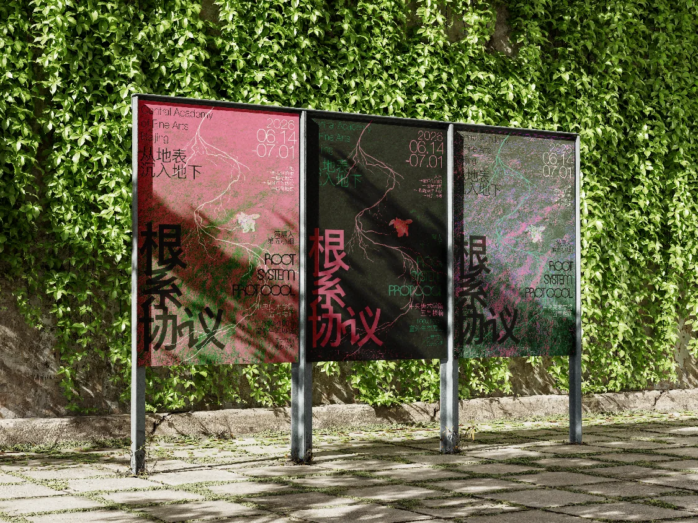